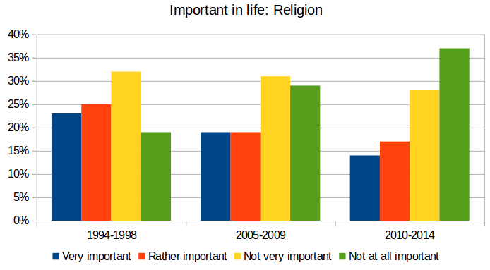

Ateizm w krajach rozwiniętych
Organizacja badań Gallupa (The Gallup Organization) opublikowała wyniki międzynarodowego badania dotyczącego nastawienia mieszkańców różnych krajów do religii.
Poziom ateizmu w zdecydowanej większości krajów rozwiniętych całkowicie odrzuca wszelkie roszczenia, że religia jest koniecznością moralną. Norwegia, Islandia, Australia, Kanada, Szwecja, Szwajcaria, Belgia, Japonia, Holandia, Dania i Wielka Brytania - wszystkie te kraje należą do najmniej religijnych na naszej planecie. Jeśli chodzi o 2015 do Organizacji Narodów Zjednoczonych, kraje te są również najbardziej zdrowe - to konkluzja dokonana na podstawie wskaźników, takich jak: długość życia,powszechnej alfabetyzacji, roczny dochód na mieszkańca, poziom edukacji, równości płci, liczby zabójstw i umieralności niemowląt. Wręcz przeciwnie, 50 najsłabiej rozwiniętych krajów na świecie w bardzo religijnym - każdy jest wierzącym. Największa liczba ateistów żyją w Estonii. Tylko 14% Estończyków odpowiedziało pozytywnie na pytanie: "Czy to ważne miejsce religii zajmuje się w waszym życiu" Dlatego kraj ten był najbardziej niewierzącym objęte niniejszym opracowaniu. Trochę więcej niż religijni ludzie żyją w Szwecji (17%), Danii (18%) i Norwegii (20%). Następne w kolejności są Czechy (21%), Azerbejdżan (21%), Hong Kong (22%), Japonii (25%) i Francji (25%). I zamyka się w pierwszej dziesiątce krajów o najbardziej ateistycznej populacji Mongolii (27%). Należy zauważyć, że w Europie najbardziej religijnymi krajami są Włochy, Portugalia, Polska, Rumunia i Grecja. Ranking najbardziej religijnych krajów na świecie prowadzone przez Egipt, gdzie odpowiedż na powyższe pytanie jest pozytywna - 100% respondentów. W pierwszej dziesiątce najbardziej religijnych krajów obejmowało r ównież: Bangladesz (99%), Sri Lanka (99%), Indonezja (98%), Kongo (98%), Sierra Leone (98%), Malawi (98%), Senegal ( 98%), Dżibuti (98%) i Maroko (98%).Zachowanie mieszkańców różnych krajów do religii - mapa świata
.PNG)
Naukowcy twierdzą, że zgodnie z informacjami otrzymanymi, poziom religijności społeczeństwa jest bezpośrednio związana z jego przeciętnego poziomu życia: im biedniejszy kraj - zwłaszcza ludności religijnej. Ogólnie rzecz biorąc, religia jest kwitnącej w najbiedniejszych społeczności świata, w których przeciętny człowiek otrzymuje mniej niż $ 2 tysięcy USD. Rocznie (zob. Wykres poniżej). Istnieje 92% respondentów twierdzi, że religia odgrywa bardzo ważną rolę w życiu codziennym. Z kolei w najbogatszych krajach świata, ze średnią roczną dochodu ponad $ 25 tysięcy USD. Religia jest ważna tylko do 44% (z wyłączeniem Stanów Zjednoczonych są rodzajem tutaj).
Czy religia jest taka ważna dla większości ludzi?
Przyczyny stopniowego "wypłukiwania" religii z ekonomicznie zamożnych społeczeństw do tej pory nie są jasne i w dalszym ciągu o tym aktywnie dyskutują. Jedna z teorii głosi, że w miarę, jak ludzie stają się bardziej wykształconymi i zamożnymi, stopniowo zaczynają zwracać na religię mniej uwagi. Z kolei do religii często zwracają się osoby, które wpadną w kłopoty — w wielu przypadkach, religia spełnia funkcję systemu pomocy społecznej. Inna hipoteza polega na tym, że religia staje się ostatnim schronieniem dla "idących społeczności" — czyli dla grup ludności, styl życia, które ulega poważnym zmianom pod wpływem sił zewnętrznych.
Nadiia Fedotova